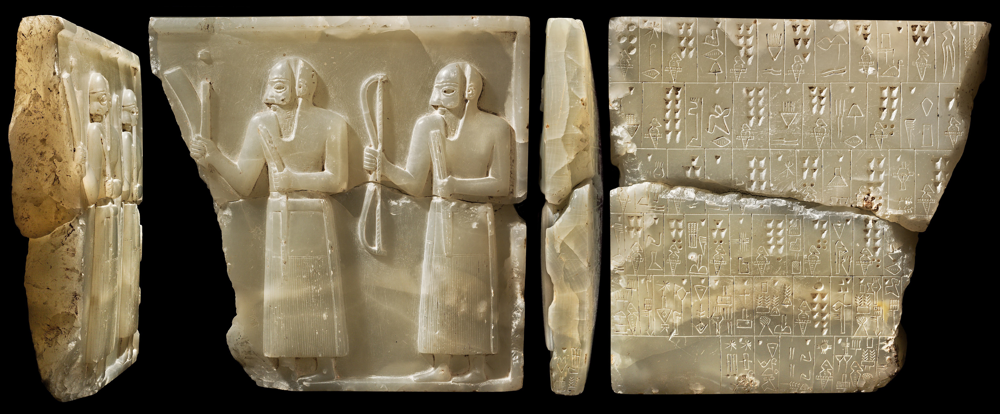

Introduction:
The vast majority of states rely on a system of organized labor to accomplish the needs of the society. After all, where would a society be without people working to ensure it has a stable infrastructure and a supply of goods and services? The sources of labor to accomplish these tasks can be split broadly into free and hired labor. In Ancient Mesopotamia free labor can be divided further into: slave labor, menial labor, and corveé labor (Steinkeller, 2005: 6,9,24). Out of these classifications, there are texts referring to slave labor and to corveé labor. From these texts, we can distinguish the differences and overlaps between slave and corveé labor in Mesopotamia to try to piece together how each held a role in the labor force.
Slavery:
Slavery has been a source of labor for many civilizations throughout history. In the Ancient Near East, the ranks of slaves were comprised of both debt-slaves and foreign slaves. Debt-slaves were typically citizens who retained some legal rights, but had to work off a payment, while foreign slaves had no legal rights and were often prisoners of war (Steinkeller, 2005: 7).

Figure 1. Prisoner Plaque from Kiš (Steinkeller, 2013: 152)
Figure 1 shows a stone engraving likely from the Early Dynastic Period II (2750-2600 BCE). The plaque is probably from the city of Kiš and translated, the number of prisoners recorded adds up to:
"36,000 captives;
(they were assigned) to the filling of threshing floors (with grain) and the making of grainstacks.
The stone (monument) fashioned in Kiš.
Zababa is the god of manhood.
Amar-ŠID (was) the scribe.”
(Steinkeller, 2013: 133)
Through the text, the plaque refers to prisoners of war entering into enslavement by fulfilling tasks involving the processing of the harvest. The drawing etched into the stone most likely shows two warriors presenting the collections from a military campaign. This plaque gives an overall large-scale impression of slavery and associates it mostly with foreign prisoners.
The following text gives insight into slavery during the Ur-III period:
nam-guruš uruki-uruki-ba sá ba-ni-in-dug4-[g]a-a igi-bi im-[ma]-an- du8-du8giškiri6dEn-[líl] dNin-líl-l[á] ù [giš]kiri6 dingir [gal]-«gal»-e-ne- [ka] «gìr»-šè im-mi-in-sig10 ù nam-g[éme] uruki-uruki-[ba] sá ba-ni- i[n]-dug4-g[a] é-uš-b[ar] dEn-líl dNin-líl-lá ù é dingir gal-«gal»-e-ne-ka sag-«šè» im-mi-[in-r]ig7
“He (i.e., Šu-Suen) blinded the males of the conquered cities, and he assigned them to the personnel of the orchards of Enlil and Ninlil, and those of other great gods. And he donated the women of the conquered cities to the weaving houses of Enlil and Ninlil, and those of other great gods.”
(Steinkeller, 2013: 8)
This text tells us that there was a gender divide in slavery with the men blinded and sentenced to manual labor outdoors, and the women sent to work in textile production. The above text also situates slavery in a religious scene, as the female slaves are put to work in the temples of gods. This could suggest that slavery was either condoned by the Mesopotamian cultic beliefs, or did not even enter into the picture of moral choices and thus was not considered in a religious manner.
It is not known how widespread the institution of slavery was in ancient Mesopotamia. According to Steinkeller, slavery had a very small role in the Mesopotamian labor force (Steinkeller, 2005: 6). Adams (2010: 3), however, believes that slavery could have been a consistent, important piece of the labor force. This is deduced from the archives at Garshana, which document many slaves being employed alongside hired laborers. Though we cannot know for sure exactly how large the institution of slavery was, we can deduce from the above texts that the Mesopotamians acknowledged slavery as a cultural norm.
Corveé:
Another form of labor in Mesopotamia was corveé labor. In Mesopotamia, Corveé was when people who were free members of the society had to fulfill a tax consisting of work hours that went to the state. The state would use these labor hours for public works projects such as irrigation and harvest work that would benefit the society as a whole. While people were serving their corveé labor time, they gained access to state-owned land and received water and rations. Corveé also had its benefits for state-formation because the organizational structure necessary to run the corveé system contributed to the strengthening of the state institutions running the program (Steinkeller, 2005: 9-13).
We know that corveé was present in Mesopotamia through its appearances in texts and letters. One translated letter is here:
"Now you are taking away a soldier from his ilkum and enlist him for tupsikkum (...) Why do you enlist him for corvee? To you it is that he should be released (wussur)! The soldier should not carry out another ilkum; let him return to his own ilkum" (AbB 3 26) (Stol, 1995: 295)
This text suggests that
ilkum is separate from
tupsikkum (corveé), implying that there might have been multiple forms of required service in Babylonia. Additionally, the reference to a soldier participating in corveé shows that no one was truly exempt from the service requirement. But, like almost all systems, there were ways to circumvent the requirement.
People who could afford it had the option of paying their way out of corveé service by hiring someone else to serve their one-month term of labor. This is shown in the following text:
Pirhum hires a free man, Erisa, to do this work for a period of 30 days (nam dub-si-ik-kinam U4.30.kam) and has already paid his wages "as those on the right and the left", i.e., at the current price. "His (Erisa's) heart is satified; if he quits service, (Pirhum) has to account to the Palace (ipaftarma e. g a 1 ippal)" (YOS 12 146; dated 3.VII, Samsuiluna 5). A witnessed re- ceipt, dated the same day, runs: "2 kor (= 600 litres) of barley; 110 litres of [flour] (?), ... litres of oil: received by Erisa, from Pirhum, his hirer (iigir?mum)" (YOS 12 145).
(Stol, 1995: 299)
We can see from this text that Pirhum pays Erisa to perform the corveé labor tax in his place. He pays up front, before the service is performed and the goods being transferred are noted. The payment up front system might seem to have some issues if the person hired does not follow through on their promised service. This implies that the Babylonians probably had a system of punishment for those who did not carry out their agreed-upon service. Additionally, the receipt tablet could have been held as proof of the deal.
Big picture: Slavery vs. Corveé:
The above discussions of slavery and corveé highlight the different aspects between the two—the institution of slavery thrives on prisoners of war with no legal rights, while corveé is a duty performed by every member of the society. At the same time, there are still some blurred lines between free labor and slave labor. Adams argues that the archives from Garshana suggest that hired workers were most likely paid in barley and that slaves received barley as their rations. Thus, he says, there must have been some blurring between slave and free labor in the receiving of the payment or ration, and they would probably have received their food servings in the same line (Adams, 4-5). These blurred lines between slave and free labor might suggest that the people in each group did not treat each other differently and instead were able to work alongside one another.
Another issue to be considered is the economic implications of slave and corveé labor. Slavery, although on the surface appears to be a “free” labor source, in practice it might actually have been a fairly expensive source of labor. As Barzel notes, the costs of slavery often rely on the costs of policing. He says that high policing costs in the sense of collecting debt payments may encourage voluntary (debt) slavery, but high policing costs in the sense of ensuring involuntary slaves are working at full capacity will result in losing money in the slave overseeing process (Barzel, 1977: 96). This cost might explain why slavery in Mesopotamia was mainly made up of debt slaves who were serving voluntary sentences of servitude and would support Steinkeller’s theory that the institution of slavery was a very small fraction of the labor force (Steinkeller, 2005: 6). Additionally, the costs of collecting money in debt payments can be extended to the idea of tax collection. The costs observed in collecting taxes may provide an economic incentive for a corveé system. Thus slavery and corveé were both influenced by the economy of Mesopotamia.
Conclusion:
Throughout Mesopotamian history, the presence of different classifications of labor suggests great organization at the state level. The extent and nature of the institution of slavery was most likely influenced by its policing costs, and corveé was probably incentivized by the costs of tax collection. Although there may not have been as clear lines between them at times, both labor forms were instituted differently and there are clear differences in their practices that can be drawn from the texts. Because labor is such a crucial part of any society, an understanding of the Mesopotamian system of labor allows for examination of many other aspects of the society.
Bibliography
Adams, Robert McC. "Slavery and Freedom in the Third Dynasty of Ur: Implications of the Garshana Archives." Cuneiform Digital Library Journal 2010.2 (2010): 1-8. Cuneiform Digital Library Initiative. 6 July 2010. Web.
Barzel, Yoram. "An Economic Analysis of Slavery." The Journal of Law and Economics 20.1 (1977): 87-110. Web.
Hout, Theo Van Den, Johan De Roos, and Houwink Ten Cate, Philo H. J. "Old Babylonian Corvee (tupsikkum)." Studio Historiae Ardens: Ancient Near Eastern Studies Presented to Philo H.J. Houwink Ten Cate on the Occasion of His 65th Birthday. Leiden: Nederlands Instituut Vor Het Nabije Oosten, 1995. 293-309. Print.
Steinkeller, Piotr, and Michael Hudson. "Labor in the Early States: An Early Mesopotamian Perspective." Introduction. Labor in the Ancient World: A Colloquium Held at Hirschbach (Saxony), April 2005. Vol. V. N.p.: n.p., n.d. 1-35. Web.
Steinkeller, Piotr. "An Archaic "Prisoner Plaque" from Kis." Revue D'assyriologie Et D'archéologie Orientale 107.1 (2013): 131-57. Web.